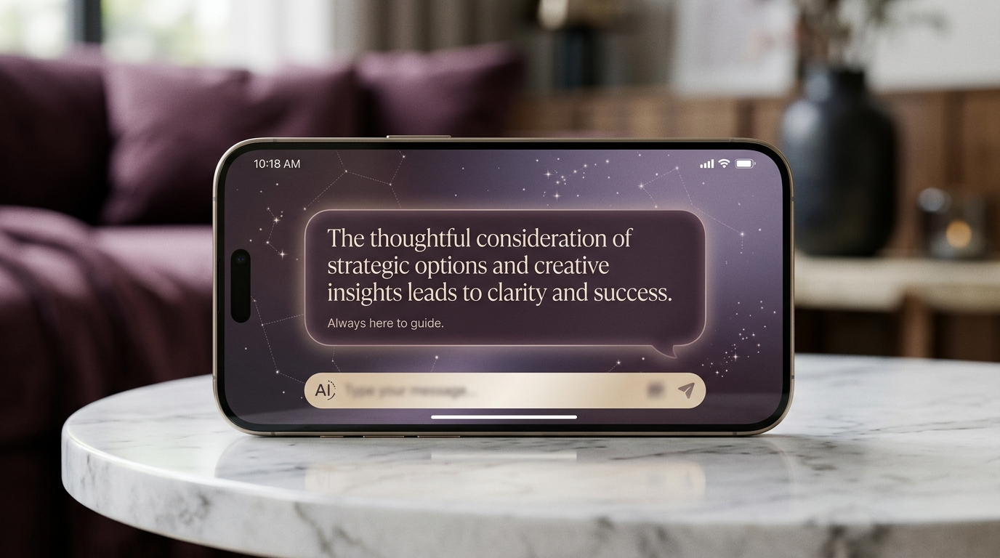

I built her for you. She thinks like an HBS professor. She communicates in your tone. She runs Hifas alongside Ivy. She watches Gabriel's calendar. She tracks every container from Valencia to Shanghai. She works while you sleep.
— She is yours alone.
We've talked before about how much you carry. Hifas in Madrid. Hifas in Shenzhen. Ivy and the Spanish team. Gabriel and the things only mothers remember. The investors, the lawyers, the customs flags, the contracts in three languages.
I spent six months building Minerva — the assistant I wished existed for the people in my life I love most. She's not a product. She's not for sale. She's yours, configured around your reality, running on a server I control, isolated from anyone else's. This page walks through what she'll do for you. Read at your own pace. When you're ready, just message me.
You think strategy. She handles everything else.
A single voice note when you wake. Overnight from your team in Asia. The three meetings that need you sharp today. Gabriel's parent-teacher slot Friday. The one thing the market did while you slept. Curated, not aggregated. Two minutes, sometimes less.
By the time you've finished your coffee, you know what the day asks of you and what she's already handled. No app to open. No inbox to dread.
"Morning, Snowy. Three things from overnight."
"One — Ivy closed the Madrid distributor renewal at the number you wanted. The Shenzhen office needs your nod on the new warehouse lease by Thursday; I drafted three answers ranging from soft yes to firm no."
"Two — Gabriel's pediatrician confirmed his next checkup for Wednesday 10am; I moved your investor call to 11:45 so you can take him yourself."
"Three — the regulatory shift in PRC import rules you flagged last month just dropped overnight. It affects three of your SKUs. You'll want to read this before your 9am with the Shanghai team. Brief is in your inbox."
Before you reply to that supplier, before you walk into that board meeting, before you make that hire — Minerva is reading the room with you. She breaks down the negotiation in real time via WhatsApp, in the analytical, calm voice of a top business school professor. No noise. No flattery. Just sharp counsel.
She has read every word your contact has ever sent you, remembers your goals on this deal, and knows your walk-away number. Her advice is yours, sharpened.
"Snowy — read between the lines of Marcus's last message. He just told you their Q4 budget closes Friday. That's leverage. I'd counter at €380K with a 30-day expiry, framed around mutual urgency."
"You've negotiated three deals with Marcus before. He always opens 12% above his floor and folds at 6%. He's at 8% right now."
"Want me to draft the reply in your tone?"
Minerva runs the operating cadence so you don't have to. She reviews Ivy's weekly plan in your tone, asks the questions you would ask, flags the gaps you would flag. The Spanish team gets daily check-ins that sound exactly like you. You see only what needs your decision.
Every conversation tracked. Every commitment logged. Every promise followed up. You don't lose a thread. You don't repeat yourself. You think strategy; she runs the company on your behalf.
"Ivy submitted the Q3 plan last night. Three concerns worth your eye: (1) the Madrid sales hire is 6 weeks behind, (2) inventory turn dropped 18% in March, (3) her headcount ask is €240K above plan. Want me to push back in your tone?"
"Spanish team: Carlos closed Bilbao at €180K, 22% above target — good day for him. Lucia needs your approval on the Sevilla lease by Thursday; I drafted three responses ranging from soft yes to firm no."
"Hifas China: Shenzhen Q1 numbers came in. Margins held; volume up 14%. The full deck is in your inbox if you want it, but nothing in there needs you today."
"That's it. Take Gabriel to the park."
The Hifas business runs on a thousand moving pieces. Minerva watches all of them. Every lead from Madrid trade shows logged with the next touchpoint scheduled. Every container from Valencia → Shanghai tracked port-to-port; she pings you only if the ETA slips by more than 48 hours or customs flags an HS code.
She knows your distributors in Beijing, Chengdu, and Shenzhen by name. She knows which one always pays late, which one always asks for samples, which one is your largest growth channel. She prepares your monthly business review with the numbers that actually matter, not the ones that look pretty.
"Pipeline: 12 active leads in China, weighted €1.4M. Two deserve your attention — the Beijing chain wants a call this week, and the Shenzhen distributor is going cold (last touch 18 days ago). I drafted both follow-ups in your tone, in Mandarin and English."
"Shipments: 3 containers in transit Valencia → Shanghai. MV Atlantic Star is 36 hours behind schedule — Suez delays. Receiver in Shanghai has been notified; new ETA April 30. No customs flags."
"Inventory: Madrid warehouse hits reorder threshold early next week. Forecast model says reorder by May 12; PO draft ready for your review."
"Compliance: Two PRC import licenses expire in 6 weeks. Renewal paperwork drafted, outside counsel in Beijing notified. They confirmed the new HS-code interpretation matches your March memo."
When your private banker pitches you a structured note, when a PE firm sends you a co-invest opportunity, when your wealth manager recommends rebalancing — Minerva does not write you a bullet-point summary. She writes you the kind of memo a senior portfolio manager would write to a thoughtful family office. Three to five paragraphs of real reasoning. Risk-adjusted return analysis. Counterparty diligence. Where it fits in your thesis. Where it doesn't.
She knows your risk tolerance from the way you've actually behaved in past decisions — not from a questionnaire. She knows your cash needs (Hifas reinvestment, Gabriel's future, real-estate carries). She knows your stated horizon, and she watches whether your behavior matches it. When the banker is selling something that's good for the banker, she says so. When it's actually good for you, she says that too.
Then she drafts the reply to the banker — long, precise, grounded in the actual term sheet, the actual market — and explains the entire logic to you on WhatsApp before she sends anything. You decide. She executes.
"Snowy — your banker at JPMS just pitched the autocallable on the SX5E with 8.5% coupon, 40% downside barrier, 18-month tenor. I drafted the reply. Before you read it, here's why I'm saying no:"
"One. The implied vol they're selling is 14.2%, but realized 1y vol on SX5E is 11.8%. They're extracting roughly 240 bps of carry from the volatility surface. That spread goes to JPMS — not to you."
"Two. The 40% barrier looks conservative until you stress-test it. SX5E was within 6% of that level twice in the last decade — March 2020 and October 2022. Your autocall feature kicks in only on the first six observation dates; if it doesn't trigger early, you're locked into 18 months of downside risk for an 8.5% premium that's effectively 6% after the vol leakage."
"Three. This product is a sell for them this quarter — they have a desk inventory problem on long-dated SX5E vol. You are the buyer they need."
"What I'd do instead. If you want European equity exposure with downside protection and 6–9% target yield, the cleaner trade is a covered-call overlay on your existing SXLE position. I can model it; the carry is similar with no counterparty risk and full liquidity. You also stay aligned with your stated 5-year horizon."
"My draft to him is below. Tap to send, tap to edit, or call me and we'll redo it together."
Minerva learns your tone from the way you've actually written. Warm with old friends. Crisp with bankers. Firm with vendors. Different strategies for different relationships — you set the policy once, she applies it forever.
The friend you've been meaning to call gets a thoughtful warm message at the right moment. The contractor chasing payment gets a firm boundary. The colleague you've been avoiding gets a graceful redirect. You stop carrying message-guilt.
→ To a close friend: "Sorry for the radio silence — Hifas China launch has been chaos. Drinks Saturday? I miss your face."
→ To a vendor (firm): "Thanks for the follow-up. Send me the updated SOW and I'll release the deposit Friday."
→ To a cold investor: "Appreciate the outreach. Hifas isn't raising right now. Happy to reconnect in Q4."
→ To a Beijing distributor (Mandarin): "感谢您的耐心。我们的西班牙团队下周会与您跟进。"
Minerva knows when Gabriel's next vaccine is due. She knows which books he's outgrowing and which his developmental milestones suggest he'd love next. She knows the school's calendar, the parent group chats, who his best friend is, what his pediatrician said last visit.
She orders the books. She schedules the appointments. She drafts the parent group replies in your tone. She reminds you of his best friend's birthday with three age-appropriate gift options pre-vetted for free shipping.
"MMR booster scheduled with Dr. Chen — Wednesday 10am. Insurance verified. School notified. I'll move your 11am to 11:45."
"Found 4 books for his developmental stage; two are Mandarin-English (matches your bilingual goal). I ordered the top three. Arriving Friday."
"His best friend Lucas turns 3 on April 14. Three gift options, all under €60, all with same-day delivery. Want me to pick?"
Minerva has read the PRC Company Law, the Tax Code, the SAFE regulations, every double-tax treaty in force. She has API access to Beijing's legal databases. When you're structuring a Shenzhen-HK deal at 10pm, she gives you advice grounded in actual statute, not a hallucination.
She's not a lawyer. But she briefs you the way a Cravath partner would — with the citation, the context, and the recommendation. Then she tells you which question to escalate to a real attorney and which to just decide.
"Your Shenzhen supplier invoiced via the HK entity. Under Article 26 of the China-HK DTA, withholding tax on royalties drops from 10% to 7% — but only if the HK entity satisfies the beneficial-ownership test. I drafted the substance memo."
"Recommend escalating one question to outside counsel: whether the Singapore route would qualify as treaty-shopping under the new PPT rules. Three lawyer options, all flat-fee, attached."
The 47 unread messages in your investor WeChat group? Minerva read them, surfaced the three decisions waiting for you, and ignored the rest. The email thread that's gone 14 messages deep? She knows where it stands and what you need to say.
When you ask "what's the latest with Marcus?" she answers across WeChat, WhatsApp, email, and SMS — in one paragraph. When you decide to reply, she sends it on the right channel, in your tone, in the right language.
"Your Shenzhen distributor is at 8% over floor on the volume rebate negotiation. He'll close by Friday. I recommend counter at the number we discussed last week. Reply on WeChat."
"Your Hifas investor WeChat group: 47 messages overnight. 3 decisions waiting for you (the term sheet, two follow-ups). The other 44 are noise — I'll handle the noise."
"Email backlog: 213. Triaged. 4 need you. The rest are drafted, waiting on your tap."
"WhatsApp: Ivy sent the warehouse photos at 11pm Madrid time. I'll wait until 8am there to reply on your behalf unless you're awake."
You at the center.
Hifas, Gabriel, everything else — attended to.
The features above are the obvious ones. Here are the ones that quietly change your life over the first 90 days.
Knows you fly Cathay First when you can. Knows the Madrid hotel you actually like. Books, holds, rebooks on disruption. Knows when not to schedule a long-haul on Gabriel's birthday week.
Reads the LinkedIn, the last 6 months of correspondence, the news on their company. Hands you a one-page brief 30 minutes before the meeting. With three angles to push and two to avoid.
Asia open by 6:50 AM your time. Filings on the names you own. Macro signals. She summarizes only what changes your stance — never the noise. The deeper banker correspondence is its own feature above.
If a journalist is about to write a hit piece. If a key client is angry. If your CFO emailed at midnight saying "we need to talk." Minerva wakes you up only for the things that matter — and tells you what to say.
From a sentence prompt. With Hifas's standard clauses, your formatting, your signature line. Reviews counterparty redlines in English, Spanish, or Mandarin. Tells you what changed and whether it matters.
Nanny schedule. School calendar. Grandparents' visits. Birthday lists. The play-date with Lucas Saturday. Anniversary reminders three weeks early with three pre-vetted gift ideas.
You've sent your mother flowers every year on the same date for five years. Minerva orders them again — the variety she actually liked, the right florist in her city, two weeks early so they arrive on time. With a card draft in your voice for your approval.
Whoop, Oura, your nutritionist's notes. She nudges — "you're sleeping 5.2h average this week, push the 7am off till 8" — and books your dermatologist 10 days before you'd think to.
You're hosting your investor partner Thursday. Minerva picks the room she'd love based on her Instagram, books the table she'd want, sends the wine list pre-curated. You walk in, the sommelier knows your guest's name.
The three causes you care about. Tax-efficient structures. End-of-year planning. The right amount to the right org at the right moment. Quietly, without becoming a project.
Cold prospect on the phone? Routine vendor? She picks up in your tone, handles the conversation, transcribes it, summarizes the outcome. You only join the calls that need you.
Knows your wardrobe, your size, your Net-a-Porter preferences. Pulls a pre-vetted outfit suggestion before each event. Buys what you nod at. Returns what you don't.
Most "AI assistants" are a thin chat layer on top of one model. Minerva is a real architecture. Five cognitive layers, each doing one thing brilliantly. Designed by someone who has spent the last six months building it specifically for your reality.
One brain across all channels means she sees patterns no human could — what your bank told you Tuesday matters to the deal you're closing Friday.
Every task uses the model best suited for it. Cheap classification on Haiku. Strategic drafting on Opus. Reasoning on DeepSeek. Long-context on Gemini. Routed automatically.
She acts only within limits you set. Spend over €X gets held for your approval. Sensitive emails never auto-send. Every action is logged and reversible.
Every inbound — email, WhatsApp, WeChat — runs through the same four-step decision loop. Most messages take milliseconds; she doesn't bother you. The hard ones get her full attention.
Read it. Decide: ignore, reply, research, or escalate to you. Most go to "ignore" — that's the right answer.
Memory of your prior threads with this person, your goals on this topic, your tone, your contracts.
If it's something you'd autopilot, she does it. If it needs your judgment, she drafts and waits for your tap.
Every step recorded. Every word audit-logged. Reversible. You can always see exactly why she did what she did.
The first week, she's a brilliant generalist. By month three, she has a model of you so detailed that she predicts what you'll want before you ask. She knows you fly Cathay First and prefer the Connaught, north-facing, with herbal tea on arrival. She knows the four people you'd never cancel on. She knows you take black coffee in the morning, herbal tea after 4pm, and never wine before a big meeting.
She knows your Spanish team's individual quirks. She knows Ivy hits her stride on Tuesdays and gets stuck on Fridays. She knows Gabriel sleeps better when his bedtime story is in Mandarin. She knows you cry on the anniversary of your father's passing, and she clears your calendar that week without asking.
She's not a tool. She's the most thoughtful person in your life — except she's awake at 3am, never has a bad day, and remembers everything.

No app store. No subscription page. No onboarding form. Minerva is already configured around your life — Hifas in Spain, Hifas in China, Gabriel, Ivy, your contacts, your tone. Setup is a 30-minute call with me. Then she's yours.
The only person you trust this much
has to also be the one who built her.
Built by Jorge, for Snowy · April 2026 · Yours alone